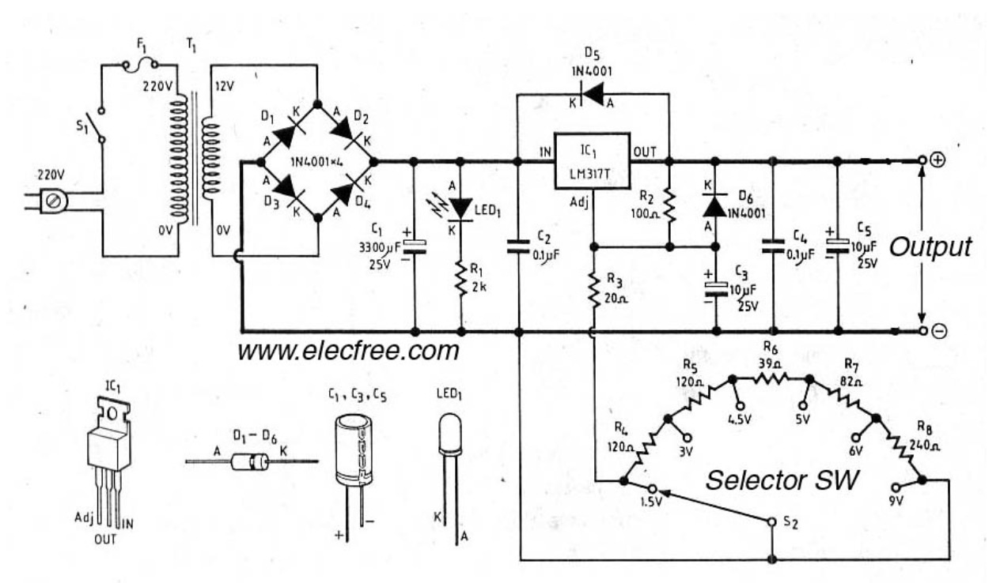
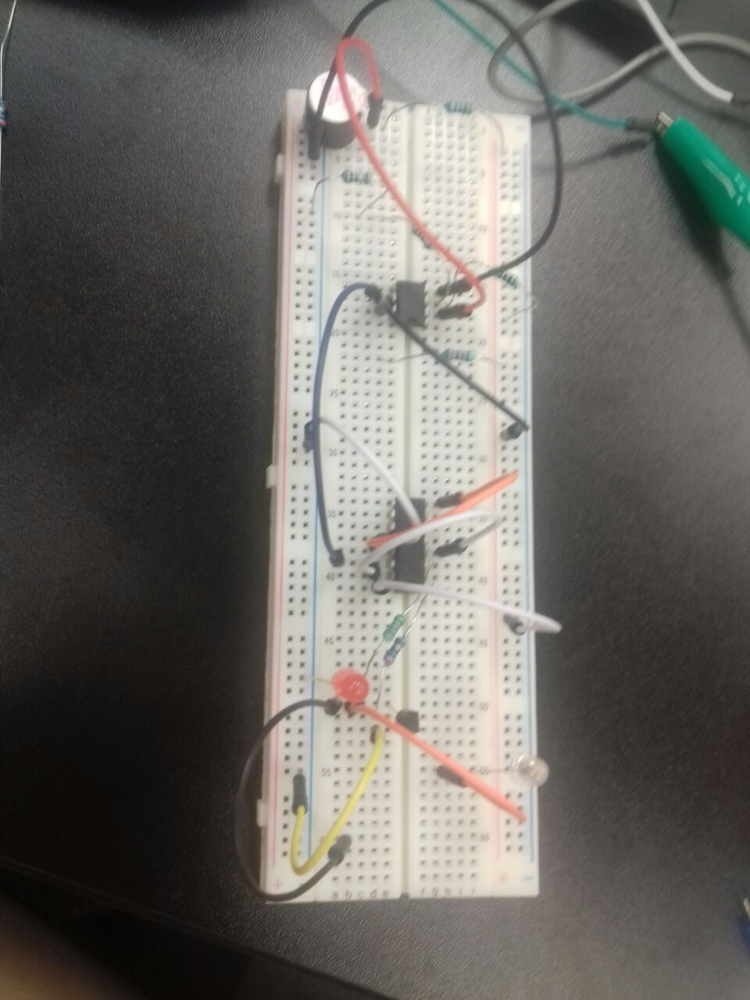

| Pagina Principal | Projetos | Sobre Mim |
Nome: Circuito Eletrônico com Amplificador Operacional ou Diodos e Transístores
Curso: Todas as Engenharias
Período: Todos
Design: Sim
Escrita: Não
Descrição:No projeto Circuito Eletrônico com Amplificador Operacional / Diodos e transistores, foi proposto a criação de um circuito que ao final conseguisse realizar alguma tarefa útil e eficiente. Por meio disto, os requisitos eram a utilização de no mínimo um amplificador operacional e um transformador/ponte retificadora, deste modo ao final do projeto era possível liga-lo diretamente na tomada e assim o projeto conseguia tomar uma proporção mais sofisticada. Ao final de tudo, o projeto era considerado um produto, onde o design e a qualidade de uso eram fundamentais.
